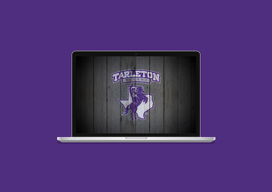

Serving Students
Taking an overlooked homepage and redefining its purpose within a student community that's ever-evolving. Developing a platform that serves students needs and ensuring that they feel welcome and apart of the broader campus community no matter where they are.
View Project


Personalizing to meet users
Helping a rural Texas bank system, learn about their expanding audience and idetifying the areas where they are undersserved and dissatifyed. Using personas that stemmed from research and auditing their current services, we came up with an extensition of current services that fit their lifestyle.
View Project